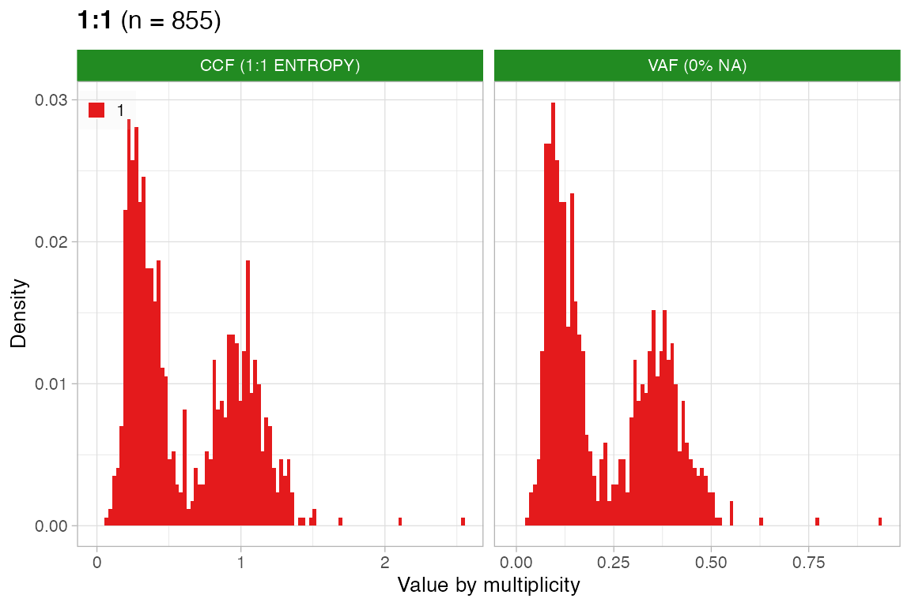
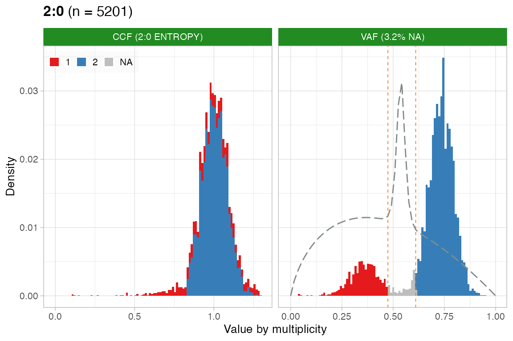
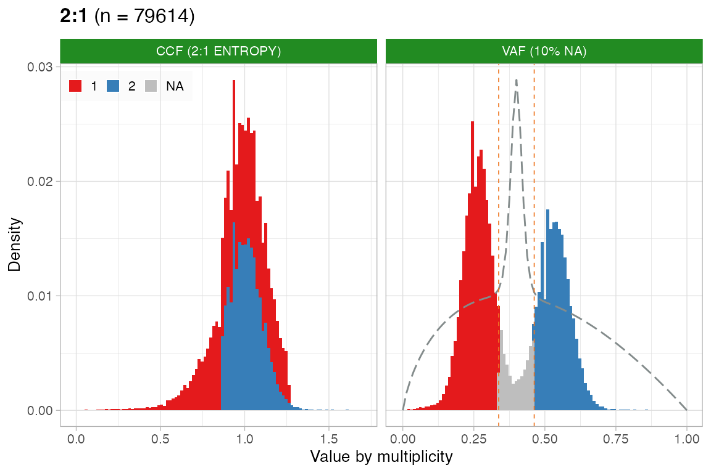
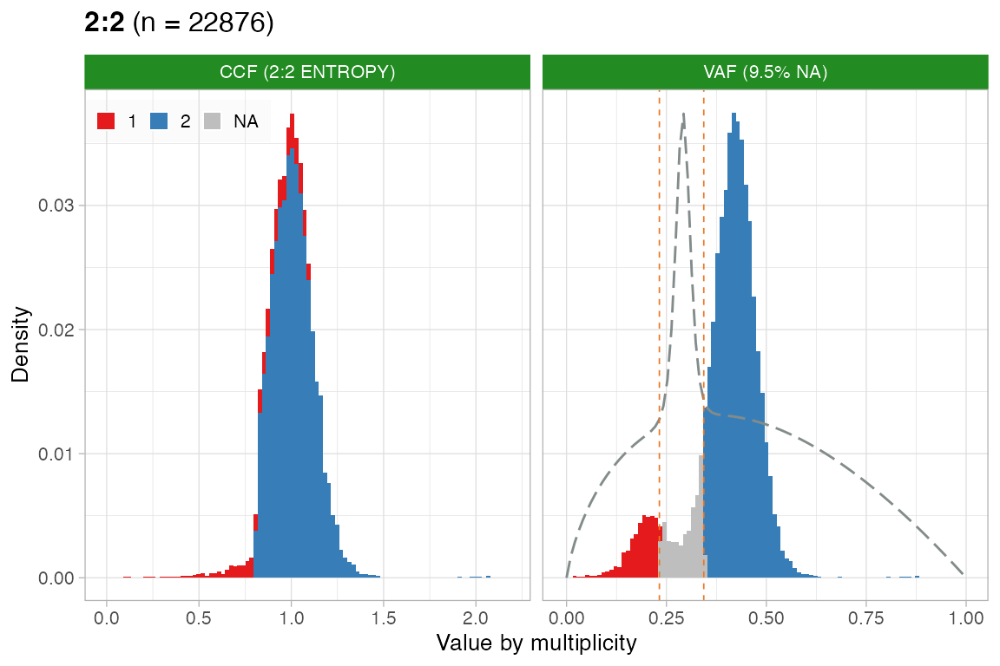
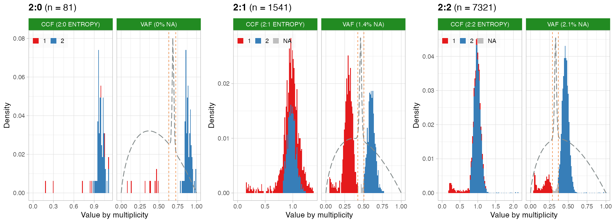
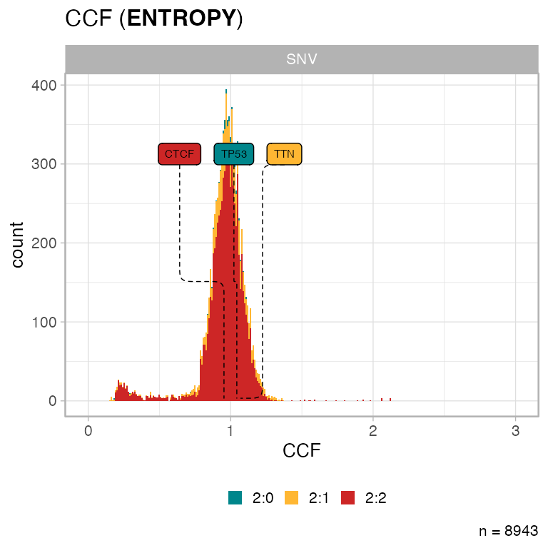
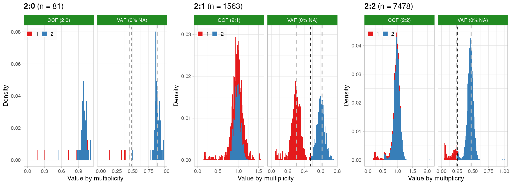
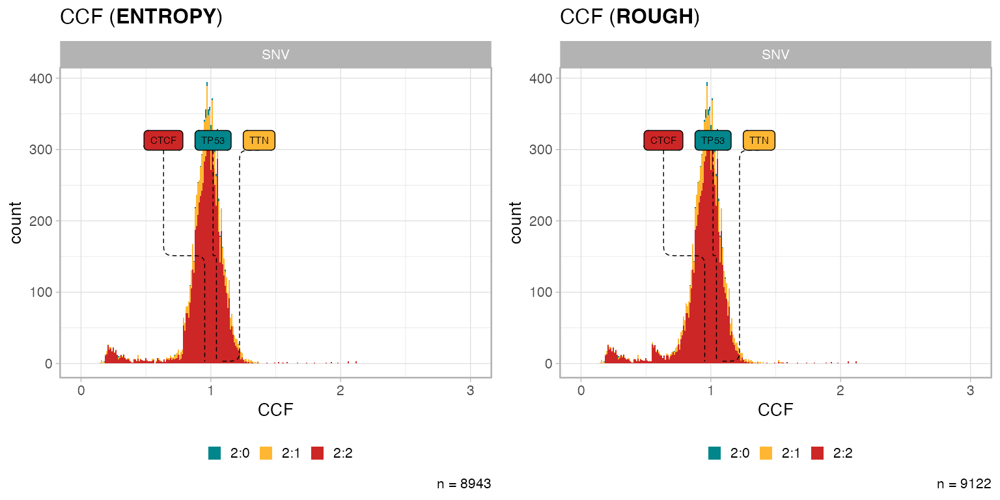
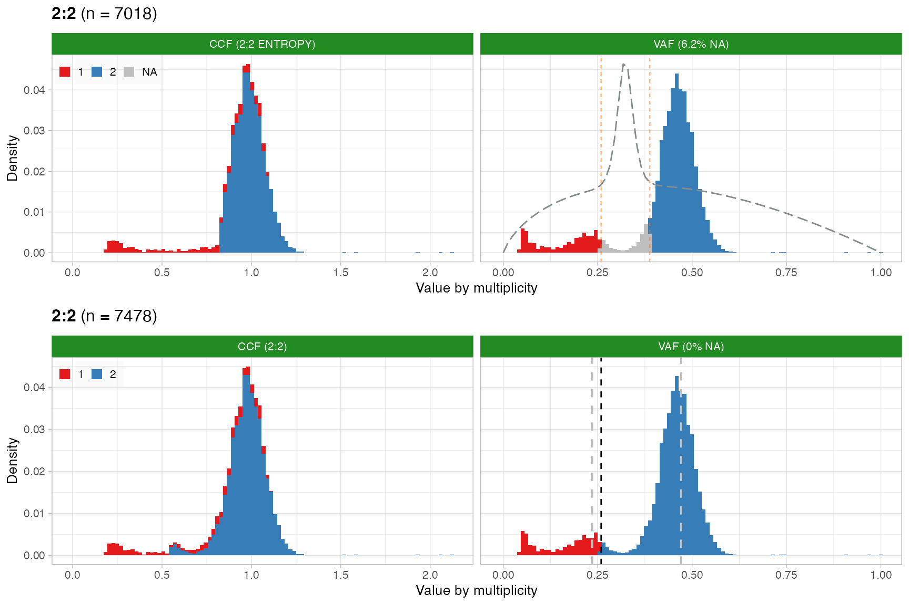
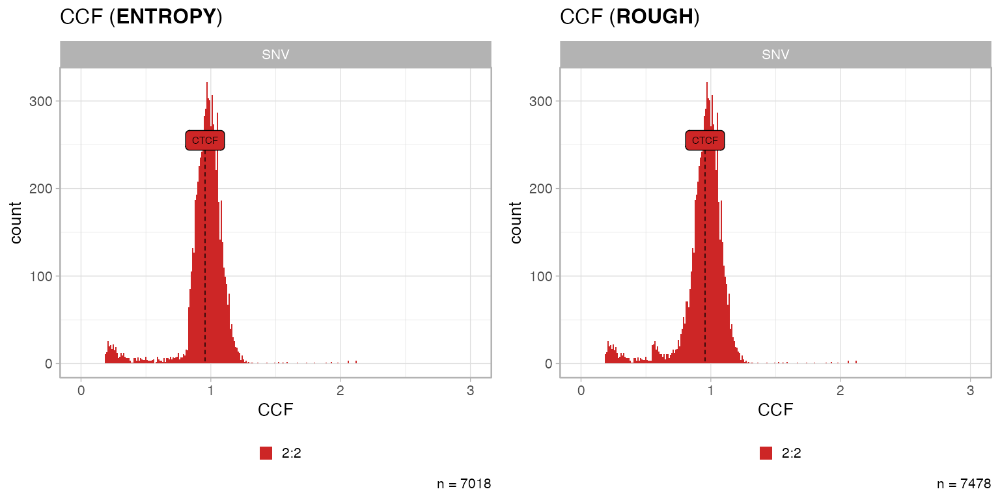

4. Computation of Cancer Cell Fractions
Source:vignettes/a4_ccf_computation.Rmd
a4_ccf_computation.Rmd
library(CNAqc)
#> ✔ Loading CNAqc, 'Copy Number Alteration quality check'. Support : <https://caravagn.github.io/CNAqc/>
require(dplyr)
#> Loading required package: dplyr
#>
#> Attaching package: 'dplyr'
#> The following objects are masked from 'package:stats':
#>
#> filter, lag
#> The following objects are masked from 'package:base':
#>
#> intersect, setdiff, setequal, unionCNAqc can compute a CCF per mutation, reporting a measure of uncertainty of the estimate.
Phasing mutation multiplicities
To compute CCFs one needs to “phase” the multiplicity for every input mutation. This is the task of computing the number of copies of a mutation mapping in a certain copy number segment; this task is a difficult, and can lead to erroneous CCF estimates
Note: phasing multiplicities is the same as computing “early” and “late” clonal events in the terminology of Gerstung et al.
CNAqc computes CCFs for simple clonal CNA segments, offering two algorithms to phase mutations directly from VAFs.
data("example_PCAWG", package = 'CNAqc')
print(example_PCAWG)
#>
#> 2:1 [n = 88422, L = 692 Mb] ■■■■■■■■■■■■■■■■■■■■■■■■■■■
#> 3:2 [n = 58384, L = 417 Mb] ■■■■■■■■■■■■■■■■■■ { BRAF }
#> 3:1 [n = 48704, L = 380 Mb] ■■■■■■■■■■■■■■■
#> 3:0 [n = 26622, L = 360 Mb] ■■■■■■■■ { CDKN2A }
#> 2:2 [n = 25290, L = 253 Mb] ■■■■■■■■
#> 3:3 [n = 16790, L = 115 Mb] ■■■■■
#> 2:0 [n = 5374, L = 67 Mb] ■■
#> 4:0 [n = 1752, L = 22 Mb] ■ { TP53 }
#> 4:2 [n = 1441, L = 11 Mb]
#> 1:1 [n = 855, L = 9 Mb]
#>
#>
#> chr11@55700000 [n = 10468, L = 78.75 Mb] 2:1 (0.21) 2:2 (0.79) ■■■■■■■■■■
#> chr11@17365005 [n = 5389, L = 31.55 Mb] 2:1 (0.21) 2:2 (0.79) ■■■■■
#> chr11@5372292 [n = 1014, L = 11.99 Mb] 2:1 (0.21) 2:2 (0.79)
#> chr11@202253 [n = 610, L = 5.17 Mb] 2:1 (0.22) 2:2 (0.78)
#> chr11@48918601 [n = 542, L = 2.68 Mb] 2:1 (0.25) 2:2 (0.75)
#> chr6@82432583 [n = 301, L = 1.81 Mb] 2:1 (0.19) 2:2 (0.81)
#> chr11@51600000 [n = 290, L = 4.1 Mb] 2:1 (0.26) 2:2 (0.74)
#> chr6@81896364 [n = 69, L = 0.54 Mb] 2:1 (0.19) 2:2 (0.81)
#> chr6@93956180 [n = 41, L = 0.11 Mb] 2:1 (0.2) 2:2 (0.8)
#> chr8@42633277 [n = 13, L = 0.26 Mb] 2:1 (0.28) 2:2 (0.72)
#>
#>
#> chr from to ref alt DP NV VAF driver_label is_driver
#> chr17 7577082 7577082 C T 78 70 0.8974359 TP53 TRUE
#> chr7 140453136 140453136 A T 95 54 0.5684211 BRAF TRUE
#> chr9 21971120 21971120 G A 23 14 0.6086957 CDKN2A TRUEPhasing by mixture entropy
The entropy-based approach will flag mutations for which we cannot phase multiplicity by VAFs with certainty; the CCFs of these mutations should be manually controlled and, unless necessary, discarded.
The model uses the entropy \(H(x)\) of a VAF mixture with two Binomial distributions to detect mutations happened before, and after aneuploidy. The density of these distributions are:
- peaked at \(v_1\)/\(v_2\) for \(m = 1\) (after CNA) and \(m = 2\) (before CNA), where \(v_i\) are peaks determined as in peak-analysis procedures;
- computed on the domain \([0, 1]\), after translating read counts into VAFs. The number of trials of the Binomial process is set to the median coverage \(n\) of the observed mutations that map to the segments under investigation.
The assumptions of CNAqc are that:
- coverage dispersion is small to justify a Binomial instead of a Beta-Binomial model;
- trials are well-represented by the median of the observed coverage.
Mixture construction. CNAqc computes two Binomial densities \(\text{Bin}_1\) and \(\text{Bin}_2\) over the set of values \([0, n]\) with \(n\) trials and success probability \(v_i\), i.e. \[ \text{Bin}_i = p(s \mid n; v_i) \] as the probability of finding \(s\) reads with the mutant allele out of \(n\) (median depth), given the mutation expected frequency \(v_i\); recall that \(v_i\) includes the effect of tumour purity.
To finalize the densities CNAqc determines the mixing proportions by counting how many mutations fall below the area of each Binomial density, restricted to the 1% and 99% quantiles. Two ranges \(I_1 = [v_1^1; v_1^{99}]\) and \(I_2 = [v_2^1; v_2^{99}]\) are computed so that:
- \(n_1\) are the number of mutations with VAF in \(I_1\);
- \(n_2\) are the number of mutations with VAF in \(I_2\);
Note that:
- the intervals might overlap (i.e., \(v_1^{99} > v_2^{1}\))
- mutations with VAF below the smallest interval point (\(I_1 < v_1^1\)) are subclonal and not counted in \(n_1\), i.e., the mutations accrued after the CNA.
The counts are normalized to create a mixture \[ M = \mu_1 * \text{Bin}_1 + (1 - \mu_1) * \text{Bin}_2 \] where \(\mu_1 = n_1/(n_1+n_2)\) and \(\mu_2 = 1 - \mu_1\) are the normalized proportions.
Entropy-based assignments.
Assigning multiplicities is difficult at the crossing of the two densities where mutations could have multiplicity \(m=1\) or \(m=2\). If mistaken, these mutations can determine aritficial peaks in the CCF distribution and compromise downstream subclonal deconvolution.
Mutations with VAF below \(v_1\) have \(m=1\), those above \(v_2\) have \(m=2\); for all others CNAqc uses the entropy \(H(x)\) \[
H(x) = - p_x \log(p_x)
\] defined from the mixture’s latent variables. Peaks in \(H(x)\) identify VAF ranges where one of the two densities dominates and \(m\) can be estimated confidently. CNAqc uses peakPick to find two peaks \(\rho_1\) and \(\rho_2\) and setting \(m=1\) for \(x < \rho_1\), \(m=2\) for \(x > \rho_2\), and defines NA for \(\rho_1 \leq x \leq \rho_2\) (crossing point).
CNAqc computes a QC score for CCFs; a karyotype is considered PASS is less than p% (default 10%) mutations are not assignable (CCF = NA).
# We do not assemble the fits
plot_CCF(example_PCAWG, assembly_plot = F)
#> [[1]]
#>
#> [[2]]
#>
#> [[3]]
#>
#> [[4]]
#>
#> [[5]] The plot shows the quantities described above; from left to right we have
- the CCF histogram coloured by multiplicity \(m\);
- the VAF histogram coloured by multiplicity \(m\) with the red dashed lines representing the areas that cannot be phased;
- the entropy \(H(x)\), where we seek to identify are \(H(x)\) peaks higher. The width of the entropy peak that determines un-assignable mutations is proportional to the variance of the counts, and therefore the sequencing coverage;
- the proportion of mutations assigned for each value of \(m\), and those unassigned.
The rightmost CCF histogram plot is also surrounded by a green or red square to reflect QC status of PASS (green) or FAIL (red).
Hard-cut based
A method is available to compute CCFs regardless of the entropy \(H(x)\). From the 2-class Binomial mixture, CNAqc uses the means of the Binomial parameters to determine a hard split of the data.
Define \(p_1\) and \(p_2\) the two means and the midpoint \(\hat{p} = p1 + (p_2-p_1)/2\) \[ \hat{p} = p_1 + (p_2 - p_1) * \mu_1 \] where \(\mu_1 = n_1/(n_1+n_2)\) is the normalized proportions.
We set \(m=1\) for \(x \leq \hat{p}\), and \(m=2\) otherwise. Since there are no NA assignments, the computation is always scored PASS for QC purposes; for this reason this computation is more “rough” than the one based on entropy.
Example computation
We work with the template dataset.
# Dataset available with the package
data('example_dataset_CNAqc', package = 'CNAqc')
x = CNAqc::init(
mutations = example_dataset_CNAqc$mutations,
cna = example_dataset_CNAqc$cna,
purity = example_dataset_CNAqc$purity,
ref = 'hg19')
print(x)
#>
#> 2:2 [n = 7478, L = 1483 Mb] ■■■■■■■■■■■■■■■■■■■■■■■■■■■ { CTCF }
#> 4:2 [n = 1893, L = 331 Mb] ■■■■■■■
#> 3:2 [n = 1625, L = 357 Mb] ■■■■■■
#> 2:1 [n = 1563, L = 420 Mb] ■■■■■■ { TTN }
#> 3:0 [n = 312, L = 137 Mb] ■
#> 2:0 [n = 81, L = 39 Mb] { TP53 }
#> 16:2 [n = 4, L = 0 Mb]
#> 25:2 [n = 2, L = 1 Mb]
#> 3:1 [n = 2, L = 1 Mb]
#> 106:1 [n = 1, L = 0 Mb]
#>
#>
#> chr from to ref alt DP NV VAF driver_label is_driver
#> chr2 179431633 179431634 C T 117 77 0.6581197 TTN TRUE
#> chr16 67646006 67646007 C T 120 54 0.4500000 CTCF TRUE
#> chr17 7577106 7577107 G C 84 78 0.9285714 TP53 TRUEWe run function compute_CCF; without parameters we use the entropy method.
Note: one should compute CCFs only for segments that pass peaks-based QC.
x = compute_CCF(x)
#> ── Computing mutation multiplicity for karyotype 2:0 using the entropy method. ─
#> ℹ Expected Binomial peak(s) for these calls (1 and 2 copies): 0.445 and 0.89
#> ℹ Mixing pre/ post aneuploidy: 0.09 and 0.91
#> ℹ Not assignamble area: [0.631578947368421; 0.723684210526316]
#> ── Computing mutation multiplicity for karyotype 2:1 using the entropy method. ─
#> ℹ Expected Binomial peak(s) for these calls (1 and 2 copies): 0.307958477508651 and 0.615916955017301
#> ℹ Mixing pre/ post aneuploidy: 0.55 and 0.45
#> ℹ Not assignamble area: [0.423423423423423; 0.504504504504504]
#> ── Computing mutation multiplicity for karyotype 2:2 using the entropy method. ─
#> ℹ Expected Binomial peak(s) for these calls (1 and 2 copies): 0.235449735449735 and 0.470899470899471
#> ℹ Mixing pre/ post aneuploidy: 0.09 and 0.91
#> ℹ Not assignamble area: [0.290780141843972; 0.368794326241135]
# Print new object, it informs us of the available computation
print(x)
#> ── [ CNAqc ] 12963 mutations in 267 segments (267 clonal, 0 subclonal). Genome
#>
#> ── Clonal CNAs
#>
#> 2:2 [n = 7478, L = 1483 Mb] ■■■■■■■■■■■■■■■■■■■■■■■■■■■ { CTCF }
#> 4:2 [n = 1893, L = 331 Mb] ■■■■■■■
#> 3:2 [n = 1625, L = 357 Mb] ■■■■■■
#> 2:1 [n = 1563, L = 420 Mb] ■■■■■■ { TTN }
#> 3:0 [n = 312, L = 137 Mb] ■
#> 2:0 [n = 81, L = 39 Mb] { TP53 }
#> 16:2 [n = 4, L = 0 Mb]
#> 25:2 [n = 2, L = 1 Mb]
#> 3:1 [n = 2, L = 1 Mb]
#> 106:1 [n = 1, L = 0 Mb]
#> ℹ Sample Purity: 89% ~ Ploidy: 4.
#> ℹ There are 3 annotated driver(s) mapped to clonal CNAs.
#> chr from to ref alt DP NV VAF driver_label is_driver
#> chr2 179431633 179431634 C T 117 77 0.6581197 TTN TRUE
#> chr16 67646006 67646007 C T 120 54 0.4500000 CTCF TRUE
#> chr17 7577106 7577107 G C 84 78 0.9285714 TP53 TRUE
#> ✔ Cancer Cell Fraction (CCF) data available for karyotypes:2:0, 2:1, and 2:2.
#> ✔ PASS CCF via ENTROPY.
#> ✔ PASS CCF via ENTROPY.
#> ✔ PASS CCF via ENTROPY.A tibble of CCF values (getter function CCF) reports the computed values in column "CCF", and in column "mutation_multiplicity".
# Tibble
CCF(x) %>% select(VAF, mutation_multiplicity, CCF)
#> # A tibble: 9,122 × 3
#> VAF mutation_multiplicity CCF
#> <dbl> <dbl> <dbl>
#> 1 0.08 1 0.180
#> 2 0.883 2 0.993
#> 3 0.915 2 1.03
#> 4 0.895 2 1.01
#> 5 0.861 2 0.968
#> 6 0.471 1 1.06
#> 7 0.849 2 0.954
#> 8 0.785 2 0.882
#> 9 0.891 2 1.00
#> 10 0.815 2 0.916
#> # … with 9,112 more rowsFit plot as above.
# We just omit empty plots with empty_plot = FALSE
plot_CCF(x, empty_plot = FALSE)
The CCF histogram can be computed with plot_data_histogram, specifying CCF as parameter.
plot_data_histogram(x, which = 'CCF')
We can compare the two CCF methods on the same data.
x_r = compute_CCF(x, method = 'ROUGH')
#> ── Computing mutation multiplicity for karyotype 2:0 using raw VAF cuts. ───────
#> ℹ Expected Binomial peak(s) for these calls (1 and 2 copies): 0.445 and 0.89.
#> ℹ Mutations per peak: n = 7, n = 68. The hard cut is t = 0.486533333333333.
#> ── Computing mutation multiplicity for karyotype 2:1 using raw VAF cuts. ───────
#> ℹ Expected Binomial peak(s) for these calls (1 and 2 copies): 0.307958477508651 and 0.615916955017301.
#> ℹ Mutations per peak: n = 809, n = 651. The hard cut is t = 0.47860122292269.
#> ── Computing mutation multiplicity for karyotype 2:2 using raw VAF cuts. ───────
#> ℹ Expected Binomial peak(s) for these calls (1 and 2 copies): 0.235449735449735 and 0.470899470899471.
#> ℹ Mutations per peak: n = 649, n = 6205. The hard cut is t = 0.257744290207086.
print(x_r)
#> ── [ CNAqc ] 12963 mutations in 267 segments (267 clonal, 0 subclonal). Genome
#>
#> ── Clonal CNAs
#>
#> 2:2 [n = 7478, L = 1483 Mb] ■■■■■■■■■■■■■■■■■■■■■■■■■■■ { CTCF }
#> 4:2 [n = 1893, L = 331 Mb] ■■■■■■■
#> 3:2 [n = 1625, L = 357 Mb] ■■■■■■
#> 2:1 [n = 1563, L = 420 Mb] ■■■■■■ { TTN }
#> 3:0 [n = 312, L = 137 Mb] ■
#> 2:0 [n = 81, L = 39 Mb] { TP53 }
#> 16:2 [n = 4, L = 0 Mb]
#> 25:2 [n = 2, L = 1 Mb]
#> 3:1 [n = 2, L = 1 Mb]
#> 106:1 [n = 1, L = 0 Mb]
#> ℹ Sample Purity: 89% ~ Ploidy: 4.
#> ℹ There are 3 annotated driver(s) mapped to clonal CNAs.
#> chr from to ref alt DP NV VAF driver_label is_driver
#> chr2 179431633 179431634 C T 117 77 0.6581197 TTN TRUE
#> chr16 67646006 67646007 C T 120 54 0.4500000 CTCF TRUE
#> chr17 7577106 7577107 G C 84 78 0.9285714 TP53 TRUE
#> ✔ Cancer Cell Fraction (CCF) data available for karyotypes:2:0, 2:1, and 2:2.
#> ✔ PASS CCF via ROUGH.
#> ✔ PASS CCF via ROUGH.
#> ✔ PASS CCF via ROUGH.The cutoff is annotated in the panel with the mutation multiplicity \(m\) assigned to each observed VAF value.
plot_CCF(x_r, empty_plot = FALSE)
Notice that for 2:0 and '2:1' the difference among the mutation multiplicity histograms (second panel) obtained from the two methods is minimal. The results for '2:2' is instead quite different because there are few mutations after genome doubling (leftmost peak, \(m=1\)), and therefore the weighted split of the rough method tends to assign most mutations to the rightmost peak (\(m=2\)).
A visual plot is obtained using the internal function CNAqc:::plot_mutation_multiplicity_rough.
ggpubr::ggarrange(
CNAqc:::plot_mutation_multiplicity_entropy(x, '2:2'),
CNAqc:::plot_mutation_multiplicity_rough(x_r, '2:2'),
nrow = 2
)
We can compare the two computed CCF distributions, and observe that the difference in the estimation from karyotype '2:2' creates a small bump at about CCF=0.5.
ggpubr::ggarrange(
plot_data_histogram(x, which = 'CCF'),
plot_data_histogram(x_r, which = 'CCF'),
nrow = 1
)
Coverage effect on CCF uncertainty
Because these are high-quality data, the results between methods are quite similar. This is however not always true. The uncertainty from the entropy method stems from the variance of the mixture components. Because these are Binomial distributions, the variance depends on the number of trials, so the sequencing coverage.
If we take the data of x and just scale by a constant the read counts, we preserve the same VAF distribution but increase the variance because we decrease coverage. Let’s see this in practice retaining 70% of the actual read counts.
x_s = init(
mutations = x$mutations %>% mutate(DP = DP * .6, NV = NV * .6),
cna = x$cna,
purity = x$purity)
#>
#> ── CNAqc - CNA Quality Check ───────────────────────────────────────────────────
#> ℹ Using reference genome coordinates for: GRCh38.
#> ✔ Fortified calls for 12963 somatic mutations: 12963 SNVs (100%) and 0 indels.
#> ✔ Fortified CNAs for 267 segments: 267 clonal and 0 subclonal.
#> ✔ 12963 mutations mapped to clonal CNAs.
# Recompute CCF values
y_e = compute_CCF(x_s, method = 'ENTROPY', karyotypes = '2:2')
#> ── Computing mutation multiplicity for karyotype 2:2 using the entropy method. ─
#> ℹ Expected Binomial peak(s) for these calls (1 and 2 copies): 0.235449735449735 and 0.470899470899471
#> ℹ Mixing pre/ post aneuploidy: 0.1 and 0.9
#> ℹ Not assignamble area: [0.258823529411765; 0.388235294117647]
y_r = compute_CCF(x_s, method = 'ROUGH', karyotypes = '2:2')
#> ── Computing mutation multiplicity for karyotype 2:2 using raw VAF cuts. ───────
#> ℹ Expected Binomial peak(s) for these calls (1 and 2 copies): 0.235449735449735 and 0.470899470899471.
#> ℹ Mutations per peak: n = 717, n = 6412. The hard cut is t = 0.259130119839897.
CCF(y_e) %>% filter(!is.na(CCF))
#> # A tibble: 7,018 × 19
#> chr from to ref alt FILTER DP NV VAF ANNOVAR_F…¹ GENE
#> <chr> <dbl> <dbl> <chr> <chr> <chr> <dbl> <dbl> <dbl> <chr> <chr>
#> 1 chr4 54939 54940 C A PASS 431. 26.4 0.0613 intronic ZNF5…
#> 2 chr4 573969 573970 G C PASS 98.4 9.6 0.0976 intergenic RP11…
#> 3 chr4 1108141 1108142 G A PASS 94.2 39.6 0.420 ncRNA_intr… RP11…
#> 4 chr4 1395352 1395353 C T PASS 107. 55.8 0.522 intergenic CRIP…
#> 5 chr4 1537972 1537973 G A PASS 93 40.8 0.439 intergenic NKX1…
#> 6 chr4 1565793 1565794 C T PASS 103. 46.2 0.448 intergenic RP13…
#> 7 chr4 1600312 1600313 G A PASS 83.4 36.6 0.439 intergenic RP11…
#> 8 chr4 1801455 1801456 G A PASS 96.6 47.4 0.491 intronic FGFR3
#> 9 chr4 2289980 2289981 C T PASS 101. 44.4 0.440 intronic ZFYV…
#> 10 chr4 2358143 2358144 T G PASS 60 3.6 0.06 intronic ZFYV…
#> # … with 7,008 more rows, 8 more variables: is_driver <lgl>,
#> # driver_label <chr>, gene <chr>, type <chr>, karyotype <chr>,
#> # segment_id <chr>, mutation_multiplicity <dbl>, CCF <dbl>, and abbreviated
#> # variable name ¹ANNOVAR_FUNCTION
CCF(y_r) %>% filter(!is.na(CCF))
#> # A tibble: 7,478 × 19
#> chr from to ref alt FILTER DP NV VAF ANNOVAR_F…¹ GENE
#> <chr> <dbl> <dbl> <chr> <chr> <chr> <dbl> <dbl> <dbl> <chr> <chr>
#> 1 chr4 54939 54940 C A PASS 431. 26.4 0.0613 intronic ZNF5…
#> 2 chr4 573969 573970 G C PASS 98.4 9.6 0.0976 intergenic RP11…
#> 3 chr4 1108141 1108142 G A PASS 94.2 39.6 0.420 ncRNA_intr… RP11…
#> 4 chr4 1395352 1395353 C T PASS 107. 55.8 0.522 intergenic CRIP…
#> 5 chr4 1537972 1537973 G A PASS 93 40.8 0.439 intergenic NKX1…
#> 6 chr4 1565793 1565794 C T PASS 103. 46.2 0.448 intergenic RP13…
#> 7 chr4 1600312 1600313 G A PASS 83.4 36.6 0.439 intergenic RP11…
#> 8 chr4 1801455 1801456 G A PASS 96.6 47.4 0.491 intronic FGFR3
#> 9 chr4 2289980 2289981 C T PASS 101. 44.4 0.440 intronic ZFYV…
#> 10 chr4 2358143 2358144 T G PASS 60 3.6 0.06 intronic ZFYV…
#> # … with 7,468 more rows, 8 more variables: is_driver <lgl>,
#> # driver_label <chr>, gene <chr>, type <chr>, karyotype <chr>,
#> # segment_id <chr>, mutation_multiplicity <dbl>, CCF <dbl>, and abbreviated
#> # variable name ¹ANNOVAR_FUNCTIONObserve that there are about 400 less mutations with CCF values when we run the entropy method.
ggpubr::ggarrange(
CNAqc:::plot_mutation_multiplicity_entropy(y_e, '2:2'),
CNAqc:::plot_mutation_multiplicity_rough(y_r, '2:2'),
nrow = 2
)
ggpubr::ggarrange(
plot_data_histogram(y_e, which = 'CCF', karyotypes = '2:2'),
plot_data_histogram(y_r, which = 'CCF', karyotypes = '2:2'),
nrow = 1
)